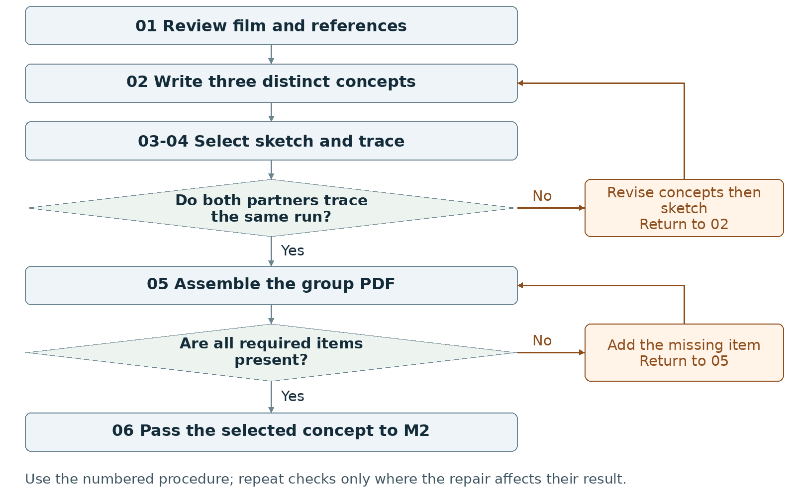
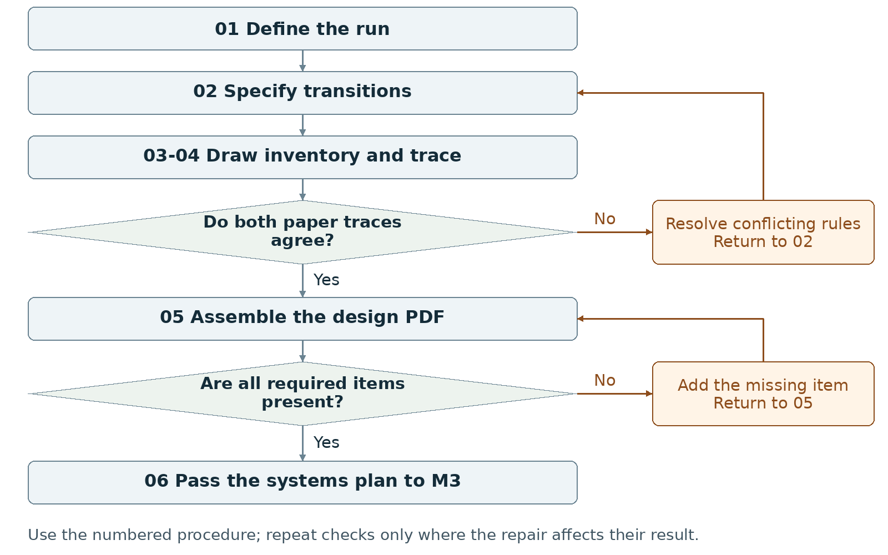
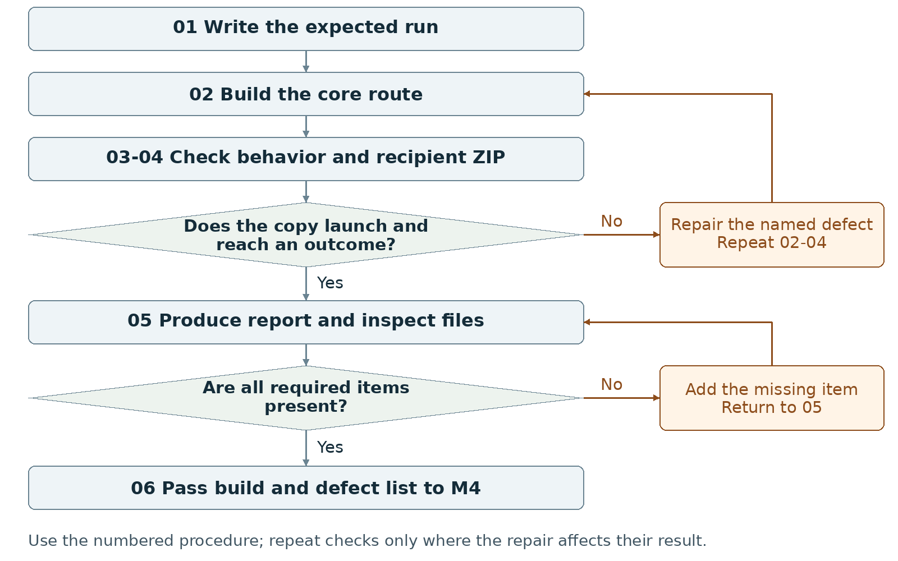
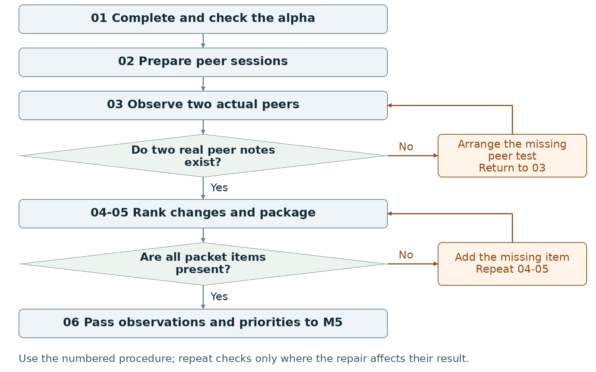
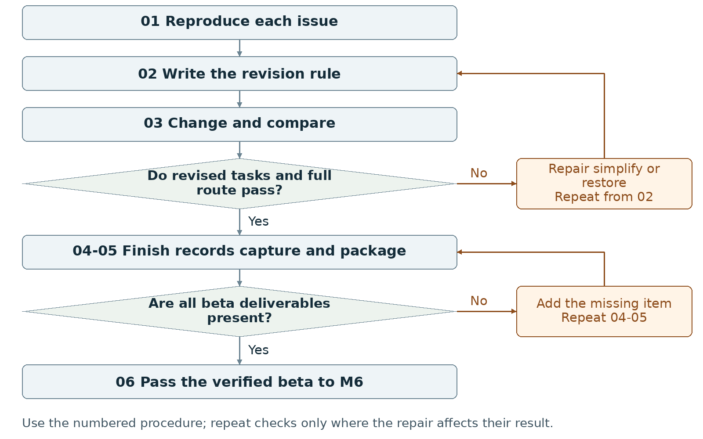
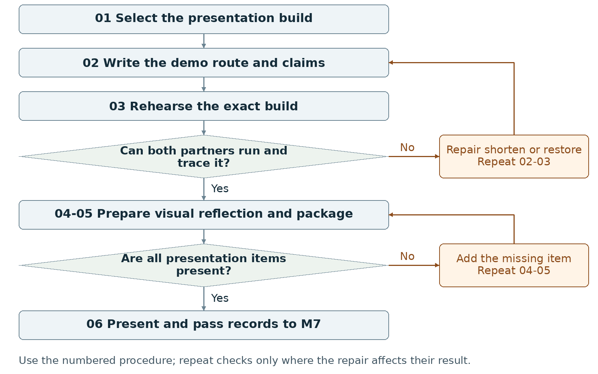
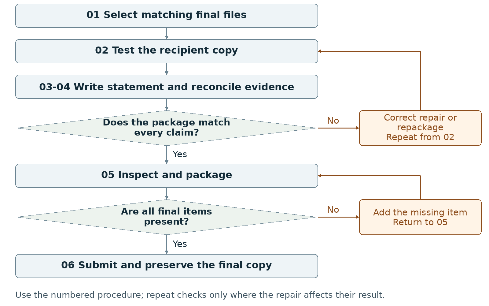
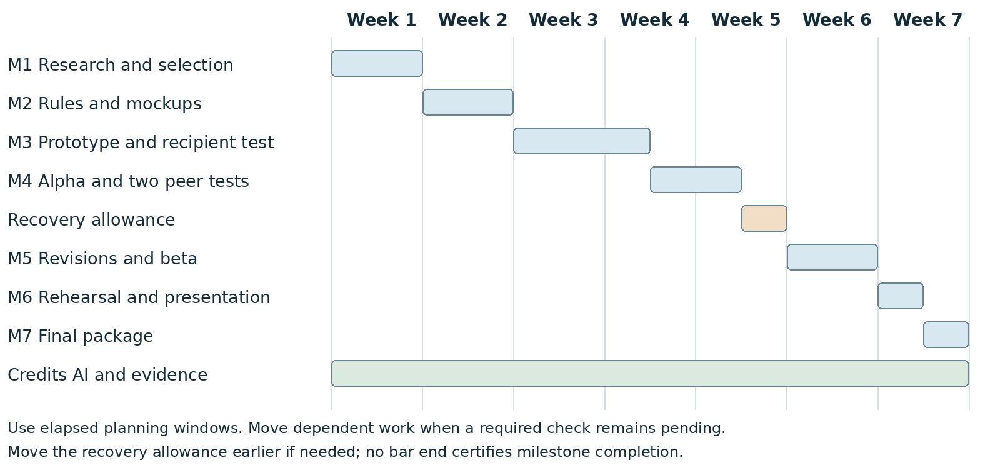

WarGames project · M1–M7 · maker and checker
Nothing counts until someone else runs it.
Groups of two build a WarGames-connected game in p5.js across seven milestones. Each milestone has a short film and its operating manual. In the films, BUG is the maker and NIT is the checker, and together they build LAST MOVE, a tic-tac-toe game against the machine. Each film acts out its milestone's procedure: a claim gets replaced by a run, a displayed consequence and a record.
One partner performs the operation. The other compares the result with the written expectation. Swap roles at the next task.
A check that has not been run stays marked pending or not tested. A finished time window does not complete a milestone.
Follow the repair route on the workflow map and repeat the affected check. If a repair changes a core rule, revise the M2 plan first.
BUG arrives with big words. NIT pops them and asks one question of three machines: what ends it?
Compare three different interactions, select one with your partner, and submit a sketch that shows its controls and response.
Submit one group PDF of at least two pages.
The checker finds every required item in the exported PDF. Both partners identify the same selected concept and trace one action from the sketch to its response and proposed ending.
What the film shows
- EXPERIENCE, SCOPE and AESTHETIC are popped and replaced by action slips: PLAYER [USES] CONTROL, PROGRAM [CHECKS] CONDITION, PROGRAM [SHOWS] RESPONSE.
- The TENSION cloud turns into an empty ENDING slot: a claimed feeling replaced by a stated ending.
- Three machines compared by action, assets, choice and ending. The dial never ends (48,000 turns), the button ends at once with no choice, the grid ends in a checkable DRAW.
- Both partners commit to the grid, BUG sketches the control surface, NIT traces it before accepting, and the roles swap.
Operating manual · M1 · full text 5 pages · 10 sections

I will first construct the <theory-of-the-program>, then generate <program text> only after the theory is explicit.
OPERATIONAL_DIAGNOSTIC
Substantives Demolished Replace vague uses of experience, aesthetic and scope with the actions and records below.
Occult States Removed Replace a claim that players will feel tension with a visible choice, a displayed consequence and a stated ending.
The Language Game Both partners select one concept by comparing its actions, required assets and reachable outcome.
CONTROL_SURFACE_DRAFT
Compare three different interactions, select one with your partner, and submit a sketch that shows its controls and response.
Start with Bring the assignment, access to WarGames, reference links, any March 18 lab sketch, and both partners' available work time. Record missing inputs before beginning.
Required package Submit one group PDF of at least two pages.
Assign maker __________ and checker __________. Swap roles at the next task. Leave checks pending until performed.
Milestone 1 Write the rules
1 <Initial Interpretation>
Write one proposed sequence per concept: <player> [uses] <control>; <program> [checks] <condition>, [updates] <value> and [shows] <response>. Name the activity represented and the ending test the program checks. Mark every operation as planned until code exists.
2 <Theory Skeleton>
| Record | What to write |
|---|---|
| <Entities> | Name the player, information displayed, choice offered, consequence and outcome for each concept. |
| [Operations] | Name one central action per concept. Record the visible response to that action. |
| <States> | Sketch a proposed start, interaction and outcome. Mark these as planned screens or states. |
| <Conditions> | Write when the player may act and what event reaches an ending. |
| <Invariants> | Propose a rule that remains true throughout a named scope. Example to adopt or replace: during a run, the active-state value always belongs to the declared state IDs. |
| <Constraints> | List required platform, two-person work, available sessions and assets. Mark optional features for removal if they displace required work. |
Use conditions to decide whether an action or transition is allowed. State the scope of each invariant and how to check it. Keep submission requirements separate from runtime rules.
3 <Assumption Ledger>
| Status | Action |
|---|---|
| <safe> | Enter an unverified premise only with its basis and limited consequence if wrong. Keep cited assignment requirements in the constraints record. |
| <uncertain> | Record untested controls, session length and asset effort. Assign a sketch, walkthrough or setup check to each uncertainty. |
| <requires-user-decision> | Leave the selected concept and final input method open until both partners record their choice. |
For each open item, record {claim, status, person checking, evidence to collect, next action}. Keep a proposed choice labeled proposed until the group adopts it.
Record the next open item Claim __________ Status __________ Owner __________ Evidence/check __________ Next action __________
Write <entity> for a person, object, value or state; [operation] for an action; and {record} for related fields. Record planned, observed, failed or not tested beside each claim. Do not mark a check passed until a person performs it and records the result.
Milestone 1 Run the procedure
4 <Operational Description>
Read each action aloud before doing it. The maker performs the action; the checker records the named result. Use the return instruction when a check fails.
| Step | Perform and save | Check and return |
|---|---|---|
| 01 Collect observations | Revisit the film; record a source location and observation. Collect credited visual references. Review relevant supplied tutorials. Open or install Processing with p5.js mode and run a minimal setup check; record blockers. Organize references and sketches. | The partner locates each reference. Replace unsupported film claims. Record setup separately from the static sketch; a working game is not required here. |
| 02 Draft three concepts | Each partner contributes. Write one paragraph per concept covering the action sequence, visual treatment and player/interactor outcome. Change the central action between concepts; three color schemes do not make three concepts. | Underline the action and ending in each paragraph. Rewrite any pair that asks the player to do the same thing in the same way. |
| 03 Select and sketch | Compare required screens, assets and build work. Record the selected concept and one rationale paragraph explaining the choice and its effect on the final project. Draw a title, main or other interface with controls and feedback. | Both partners write the selected name and point to the control and its response. Reopen the choice if the selection is still disputed. |
| 04 Trace the sketch | Give both partners the same starting screen and action. Each writes the next display and ending rule, then compare records. Label the sketch static if it is not executable. | Resolve every conflicting prediction in the concept paragraph or sketch. Do not claim the program works from a static image. |
| 05 Assemble and inspect | Export one PDF with the three concepts, selection paragraph, sketch, screenshot/capture, references, progress note and AI statement. Open the exported PDF and check page count and readable labels. | Use at least two pages. Add missing content or enlarge unreadable text, export again, and reopen the PDF. |
| 06 Hand off | Place the selected concept, sketch, references, open decisions and AI record with the M2 inputs. Both partners open the same files. | Record the submitted file name and any unresolved question. Begin M2 from the selected concept only. |
5 <Failure Description>
| Observed problem | Required response |
|---|---|
| No distinct concepts | Rewrite the central action or outcome in step 02; keep three different proposals. |
| No adopted selection | Compare work and constraints in step 03; keep the stage pending until the group records its choice. |
| Polished image with no usable control | Add the control, feedback and ending reference in step 03; repeat the trace in step 04. |
Use the map A no branch returns to the named task. Repair the recorded problem and repeat that check; do not mark the stage passed because the planned time window ended.
Milestone 1 Test changes and produce the work
6 <Change Test>
Ask: "What would change if the requirements changed?" The maker writes the expected result first. The checker performs or traces the change and records the result. Swap roles for the second scenario.
| Modification | Run this check |
|---|---|
| Replace the input | Replace typed commands with visible buttons, or reverse that choice. Redraw the control and trace the same decision. Record which rules remain unchanged and which instructions change. |
| Reduce the work budget | Halve the proposed session length and custom-asset allowance. Cross out optional content. Verify that the central action, a reachable outcome and all required deliverables remain. |
Save {version or design record, starting condition, input/change, expected result, observed result, pass/fail/not tested, next action}. Use paper traces in M1-M2; report executed checks only when they occurred.
7 <Implementation Plan>
Assign reference collection and first concept drafts to one partner; assign the comparison sheet and first sketch to the other. Swap review roles before selection. Run only a small setup or behavior experiment if it answers a named uncertainty.
8 <Program Text>
Produce the concept paragraphs and interface sketch. Do not build the full project at this stage. If a small executable proof is used, write its rule and expected output first, then record what the run actually showed.
9 <Theory-Code Mapping>
| Element | Record the connection |
|---|---|
| <types> | List proposed data such as choice or signal; do not claim it is implemented. |
| <functions> | Map the central action to a proposed operation. |
| <classes> | Use none unless a later design gives one a specific responsibility. |
| <tests> | Keep the two partners' sketch traces and change-test notes. |
| <comments> | Annotate why the sketch puts a control or display in that position. |
| <configuration> | Record proposed controls, session length, colors and asset allowance. |
Use actual file and function names when code exists. Label planned counterparts proposed; write not applicable when a structure is absent.
Carry forward the course rules
Keep the project connected to WarGames. Build in Processing using p5.js mode; accept interactive input; include at least three distinct screens or states; provide a start and reachable outcome; credit external material; organize and comment the code.
Record actual AI use at every milestone, including use of this manual if adopted. Use AI for bounded brainstorming, explanation, small examples you study and adapt, specific debugging or review. Author the project as a group; do not request an entire generated project. Identify assisted code and your changes in comments.
Milestone 1 Submit and hand off
10 <Residual Human Theory>
Record the reason for choosing this concept, the alternatives rejected, and one question still needing a running test. Each partner points to a reference and to the sketch element it influenced. Preserve disagreements as open decisions.
Check the required submission
- One group PDF, at least two pages.
- Three concept paragraphs covering experience, aesthetic and interactor/player outcomes.
- One selected-concept paragraph explaining the choice and its influence on the final project.
- One proof-of-concept interface sketch; label a static mockup as static.
- At least one screenshot or sketch capture, a short progress note, reference credits and an AI Use Statement.
Suggested PDF order: concepts and selection on page 1; sketch, captions and records on page 2 or later. Add pages when needed for readable text.
Completion check The checker finds every required item in the exported PDF. Both partners identify the same selected concept and trace one action from the sketch to its response and proposed ending.
Progress note Name the current version; state what was completed and checked, what is missing, and the next action with its owner. Add the screenshot/capture supporting the current status.
Complete the AI Use Statement
| Field | Enter the actual record |
|---|---|
| Tool and dates | Name the tool, or record no AI used only if accurate. Enter actual dates of use. |
| Request and affected work | Summarize the request. Name the text, image, planning record or code file affected. |
| Kept changed rejected | Record the output retained, edits or rewrites made, and material discarded. |
| Group confirmation | Recommended check: each partner traces actual submitted code; for planning-only work, trace the proposed interaction. Identify image sources, retained edits and displayed information. Then complete the required group confirmation covering code and images; leave it pending until both partners can confirm it. |
If this AI-produced manual is adopted, record ChatGPT, October 21 2026, milestone planning and operational rewrite, and your actual kept/changed/rejected choices. Do not copy a completed student confirmation from this manual.
Handoff Send the selected concept, rationale, sketch, source list and open decisions into M2. Do not carry the rejected concepts forward as simultaneous requirements.
Record: maker __________ checker __________ version __________ Checks still pending __________ submitted file(s) __________ upload status __________
Requirements source: supplied WarGames project brief and milestone instructions. Treat roles, file names, internal checks and relative-week allocations as recommended working procedures. Use corrected deadlines from the course; none are asserted here.
HANDOFF Send the selected concept, rationale, sketch, source list and open decisions into M2. Do not carry the rejected concepts forward as simultaneous requirements. M2 →
Same inputs, two paper traces, two different results. The missing rule is found and written on the arrow.
Write enough rules for both partners to predict a run, then submit the brief, program state flowchart, asset list and two mockups.
Submit one group PDF of at least two pages; keep the design brief itself to one page.
The checker finds every required document. Both partners' traces give the same next states and visible outputs for the agreed input sequence; each planned outcome has an explicit entry condition.
What the film shows
- The big board becomes the state flow TITLE → PLAY → END.
- One input card (squares 5, 1, 9), two separate traces: X WINS and STILL PLAY.
- The difference is traced to an unwritten rule. NIT writes PLAYER MOVES FIRST on the transition, and the retrace matches.
- The invariant is tested: after END, new marks bounce off and the result does not change.
Operating manual · M2 · full text 5 pages · 10 sections

I will first construct the <theory-of-the-program>, then generate <program text> only after the theory is explicit.
OPERATIONAL_DIAGNOSTIC
Substantives Demolished Replace vague uses of clarity, system and feasibility with the actions and records below.
Occult States Removed Replace both partners understand the design with two written traces of the same inputs and a comparison of their outputs.
The Language Game Write the state, accepted input, condition, data change and visible response for every planned transition.
CONTROL_SURFACE_DRAFT
Write enough rules for both partners to predict a run, then submit the brief, program state flowchart, asset list and two mockups.
Start with Open the selected M1 concept, rationale, sketch, sources and unresolved choices. Reopen M1 if no concept has been adopted.
Required package Submit one group PDF of at least two pages; keep the design brief itself to one page.
Assign maker __________ and checker __________. Swap roles at the next task. Leave checks pending until performed.
Milestone 2 Write the rules
1 <Initial Interpretation>
Write the chosen sequence: <player> [starts] <run> and [uses] <control>; <input handler> [checks] <condition> and [updates] <domain value>; <outcome handler> [records] <outcome> when the written test succeeds. State the goal, unsuccessful condition and ending; use only the scoring or competition your concept actually needs.
2 <Theory Skeleton>
| Record | What to write |
|---|---|
| <Entities> | List each domain value and its purpose. Give initial values, allowed values and the event that changes each value. |
| [Operations] | For each control, record the permitted action, input validation, data change and displayed result. |
| <States> | Name at least three states for the required program diagram. Record visible information and accepted or blocked inputs in each. |
| <Conditions> | Write a testable condition on every transition. Set priority if two ending conditions can hold at once. |
| <Invariants> | Write rules that must remain true within stated scopes. Example to adopt or replace: after an ending, ordinary play input cannot change the completed result. |
| <Constraints> | List platform, required screens/states, input method, asset limit and recipient launch requirement. Separate these delivery constraints from runtime invariants. |
Use conditions to decide whether an action or transition is allowed. State the scope of each invariant and how to check it. Keep submission requirements separate from runtime rules.
3 <Assumption Ledger>
| Status | Action |
|---|---|
| <safe> | Enter an unverified premise only with its basis and limited consequence if wrong. Keep adopted choices in the entry records and requirements in constraints. |
| <uncertain> | Mark timing, randomness, difficulty, file loading and device layout untested. Name a prototype check for each. |
| <requires-user-decision> | Resolve disputed goal, ending, controls and simultaneous-outcome priority before implementing those rules. |
Record {claim, status, owner, check, consequence if wrong}. Give each unresolved implementation question an M3 test. Rewrite contradictory core rules now.
Record the next open item Claim __________ Status __________ Owner __________ Evidence/check __________ Next action __________
Write <entity> for a person, object, value or state; [operation] for an action; and {record} for related fields. Record planned, observed, failed or not tested beside each claim. Do not mark a check passed until a person performs it and records the result.
Milestone 2 Run the procedure
4 <Operational Description>
Read each action aloud before doing it. The maker performs the action; the checker records the named result. Use the return instruction when a check fails.
| Step | Perform and save | Check and return |
|---|---|---|
| 01 Fix the run rule | Both partners complete the purpose sentence and mark the required goal, unsuccessful condition and ending. List what the player sees before deciding. | Remove rules that require information the interface does not show, or add that information to the mockup. |
| 02 Specify transitions | Create one row per event: {current state, input/event, condition, data change, next state, visible result}. Add blocked-input handling and reset values if replay is included. | Trace every row from a defined start. Repair unreachable outcomes, undefined values and conflicting conditions. |
| 03 Draw and inventory | Draw the program state flowchart with at least three states. Draw both title and main-interaction mockups. List each asset's use, creator/source, permission or license, status and owner. | Match control labels to transition rows. Mark placeholders and remove optional assets that exceed the work allowance. |
| 04 Run paper checks | Give both partners the same starting values and input sequence. Each writes the states, data and outputs independently. Compare one complete run and one blocked input. | Resolve differences in step 02. Update the diagram and mockups after a rule changes. Do not settle a contradiction by choosing different test inputs. |
| 05 Assemble the PDF | Write the one-page brief from the agreed rules. Add flowchart, asset list, both mockups, screenshot/capture, progress note and AI statement on further pages. | Open the exported PDF. Confirm total length is at least two pages, the brief is one page and each figure can be read. |
| 06 Hand off | Give M3 the brief, transition table, state diagram, mockups, asset list, scoped invariants and test list. Record actual installed versions when available. | Both partners locate the same start values, ending condition and first prototype check. |
5 <Failure Description>
| Observed problem | Required response |
|---|---|
| Different predicted outputs | Revise the relevant condition in step 02; repeat the same paper trace. |
| Workflow map submitted as state diagram | Create the program's screen/state diagram in step 03. The process map in this manual does not satisfy that deliverable. |
| Missing title or main mockup | Draw the absent interface and annotate its controls; include both in step 05. |
Use the map A no branch returns to the named task. Repair the recorded problem and repeat that check; do not mark the stage passed because the planned time window ended.
Milestone 2 Test changes and produce the work
6 <Change Test>
Ask: "What would change if the requirements changed?" The maker writes the expected result first. The checker performs or traces the change and records the result. Swap roles for the second scenario.
| Modification | Run this check |
|---|---|
| Change the limiting rule | Replace a timer with a fixed number of decisions; if no limit exists, propose a decision limit. Revise state data, conditions and instructions on paper. Trace one ending with the replacement. |
| Add another outcome | Add one proposed ending. Write its entry condition and priority against existing endings. Trace a case where two conditions coincide; specify exactly which result is shown. |
Save {version or design record, starting condition, input/change, expected result, observed result, pass/fail/not tested, next action}. Use paper traces in M1-M2; report executed checks only when they occurred.
7 <Implementation Plan>
Assign the transition table and first paper trace to one partner, the mockups and asset inventory to the other, then swap review. Outline initialization, input handling, rule updates, drawing, outcome checks and reset if used. Schedule peer availability early; collect peer evidence in M4.
8 <Program Text>
Produce the design documents. No game implementation is required in M2. Use short pseudocode only to settle a specific rule, after writing that rule in the transition table; keep it labeled proposed.
9 <Theory-Code Mapping>
| Element | Record the connection |
|---|---|
| <types> | Propose a data representation for each entity and valid range. |
| <functions> | Assign each operation and condition to one planned responsibility. |
| <classes> | Add a class only for a named recurring responsibility; otherwise mark not used. |
| <tests> | Link each condition or invariant to a paper trace and future run check. |
| <comments> | Record why outcome priority, reset or input restrictions were chosen. |
| <configuration> | List adjustable limits, sizes and timings separately from fixed rules. |
Use actual file and function names when code exists. Label planned counterparts proposed; write not applicable when a structure is absent.
Carry forward the course rules
Keep the project connected to WarGames. Build in Processing using p5.js mode; accept interactive input; include at least three distinct screens or states; provide a start and reachable outcome; credit external material; organize and comment the code.
Record actual AI use at every milestone, including use of this manual if adopted. Use AI for bounded brainstorming, explanation, small examples you study and adapt, specific debugging or review. Author the project as a group; do not request an entire generated project. Identify assisted code and your changes in comments.
Milestone 2 Submit and hand off
10 <Residual Human Theory>
Save the reasons for the chosen mechanic, outcome priority and asset cuts. Each partner traces the same proposed rule change through the table and mockup. Write any disagreement as a specific rule to resolve before its code is written.
Check the required submission
- One group PDF, at least two pages, containing a one-page design brief.
- A program state flowchart with at least three states and labeled transitions.
- An asset list.
- A title-screen mockup and a main-interaction-screen mockup.
- At least one screenshot/mockup capture, short progress note, credits as needed and AI Use Statement.
Suggested order: page 1 brief; page 2 program flowchart and asset list; page 3 or later mockups and records. Keep the brief's one-page requirement distinct from total PDF length.
Completion check The checker finds every required document. Both partners' traces give the same next states and visible outputs for the agreed input sequence; each planned outcome has an explicit entry condition.
Progress note Name the current version; state what was completed and checked, what is missing, and the next action with its owner. Add the screenshot/capture supporting the current status.
Complete the AI Use Statement
| Field | Enter the actual record |
|---|---|
| Tool and dates | Name the tool, or record no AI used only if accurate. Enter actual dates of use. |
| Request and affected work | Summarize the request. Name the text, image, planning record or code file affected. |
| Kept changed rejected | Record the output retained, edits or rewrites made, and material discarded. |
| Group confirmation | Recommended check: each partner traces actual submitted code; for planning-only work, trace the proposed interaction. Identify image sources, retained edits and displayed information. Then complete the required group confirmation covering code and images; leave it pending until both partners can confirm it. |
If this AI-produced manual is adopted, record ChatGPT, October 21 2026, milestone planning and operational rewrite, and your actual kept/changed/rejected choices. Do not copy a completed student confirmation from this manual.
Handoff Pass the agreed rules and unresolved technical questions to M3. Mark the workflow map in this manual as a work aid, not the required program state diagram.
Record: maker __________ checker __________ version __________ Checks still pending __________ submitted file(s) __________ upload status __________
Requirements source: supplied WarGames project brief and milestone instructions. Treat roles, file names, internal checks and relative-week allocations as recommended working procedures. Use corrected deadlines from the course; none are asserted here.
HANDOFF Pass the agreed rules and unresolved technical questions to M3. Mark the workflow map in this manual as a work aid, not the required program state diagram. M3 →
It works on one computer. NIT carries the ZIP to a second one.
Build a complete minimal interaction and test the actual recipient package on another computer.
Submit one working-project ZIP plus one group PDF of at least two pages.
The checker launches the recipient copy by the written simple method, starts from the title, uses the shown controls and reaches the intended outcome. The required ZIP, PDF and accurate records all exist.
What the film shows
- NIT writes the prediction before anything runs.
- The game works on computer A. The extracted ZIP on computer B shows "?" where the X should be: expected versus observed.
- Cause: x.png was left behind through a ../ path. Repaired, re-zipped, retested, and only then is the pass recorded.
- The claim stays the size of the test: tested on 2 computers, every other computer NOT TESTED.
Operating manual · M3 · full text 5 pages · 10 sections

I will first construct the <theory-of-the-program>, then generate <program text> only after the theory is explicit.
OPERATIONAL_DIAGNOSTIC
Substantives Demolished Replace vague uses of functionality, portability and understanding with the actions and records below.
Occult States Removed Replace it works and we understand the code with a recorded launch, input sequence, observed result and partner trace through named files.
The Language Game Predict a run, execute that run in the packaged copy, and repair any difference before recording a pass.
CONTROL_SURFACE_DRAFT
Build a complete minimal interaction and test the actual recipient package on another computer.
Start with Open the M2 brief, transition table, program state diagram, mockups, asset plan and unresolved technical checks. Keep the required Processing p5.js mode project intact.
Required package Submit one working-project ZIP plus one group PDF of at least two pages.
Assign maker __________ and checker __________. Swap roles at the next task. Leave checks pending until performed.
Milestone 3 Write the rules
1 <Initial Interpretation>
Write the expected sequence: <player> [activates] <Start>; <input handler> [sets] <main state>; <player> [uses] <control>; <named handler> [updates] <data>; <outcome handler> [checks] <ending test> and [records] <outcome>. Use actual handler names when they exist. List optional features that may remain placeholders.
2 <Theory Skeleton>
| Record | What to write |
|---|---|
| <Entities> | List actual runtime data, starting values and the files that store them. Mark planned data separately. |
| [Operations] | Identify the handler that accepts input, validates it, changes data and causes displayed feedback. |
| <States> | Implement a title, main interaction and at least one fail or success state; retain at least three screens/states overall. |
| <Conditions> | Write the exact input guards and ending tests. Specify behavior after an outcome and for replay if provided. |
| <Invariants> | Carry forward scoped rules from M2. Check valid value ranges after accepted and rejected inputs. Record expected reset values as the postconditions of replay. |
| <Constraints> | Keep controls visible. Record actual authoring versions and recipient launch route. Require no extra software downloads and no complex recipient setup; preserve cross-OS operation. |
Use conditions to decide whether an action or transition is allowed. State the scope of each invariant and how to check it. Keep submission requirements separate from runtime rules.
3 <Assumption Ledger>
| Status | Action |
|---|---|
| <safe> | Enter an unverified premise only with its basis and limited consequence if wrong. Keep agreed rules in the plan and observed results in check records. |
| <uncertain> | Mark timing, rapid input, dependencies and every untested OS/browser combination not tested. |
| <requires-user-decision> | Resolve any repair that changes the player's rule in M2 before implementing it. |
Record {Processing version, mode version, p5.js version, dependency, intended launch method, test environment}. Do not infer recipient operation from the editor's Run button.
Record the next open item Claim __________ Status __________ Owner __________ Evidence/check __________ Next action __________
Write <entity> for a person, object, value or state; [operation] for an action; and {record} for related fields. Record planned, observed, failed or not tested beside each claim. Do not mark a check passed until a person performs it and records the result.
Milestone 3 Run the procedure
4 <Operational Description>
Read each action aloud before doing it. The maker performs the action; the checker records the named result. Use the return instruction when a check fails.
| Step | Perform and save | Check and return |
|---|---|---|
| 01 Write the expected run | The maker writes starting values, inputs, next states, visible output and ending before running code. The checker compares this with M2. | If predictions conflict, revise the rule before building it. |
| 02 Build the core route | Implement title, visible controls, main action, response and a reachable fail or success state in Processing p5.js mode. Use placeholders that still communicate the action and result. | Keep at least three screens/states. Pause styling work when it delays a missing transition. |
| 03 Run behavior checks | Execute the predicted route in the authoring environment. Try a blocked input, rapid repeated input and replay if supported. Write expected and observed outputs separately. | Repair the smallest failing operation; replay its input sequence. Record a designed player loss separately from a software defect. |
| 04 Test distribution | Create the actual ZIP. Extract it in a fresh location on another computer; follow only the included launch instructions. Record OS/browser, network condition, dependencies, inputs and result. | Repair missing files or launch problems, recreate the ZIP, extract again and retest. Leave untested environments marked not tested. |
| 05 Produce the report | Write what works and what is missing. Add current screenshots, launch/test record, short progress note, credits and AI statement. Export at least two pages and reopen both deliverables. | Check the screenshots and report identify the same build inside the ZIP. |
| 06 Hand off | Pass the exact prototype, rule changes, distribution record and ordered missing-work list to M4. Each partner traces one input through the submitted code. | Resolve a missing required route before marking the prototype ready for the alpha stage. |
5 <Failure Description>
| Observed problem | Required response |
|---|---|
| Code runs only in the original folder | Repair dependencies and relative paths in step 04; test a newly extracted ZIP. |
| Rules change during drawing or repeat unexpectedly | Locate the data-changing handler in step 03; define when an action counts and test that rule. |
| Simple launch needs extra setup | Simplify the dependency or resolve the launch method. Do not replace the required working ZIP with a video or an untested hosted link. |
Use the map A no branch returns to the named task. Repair the recorded problem and repeat that check; do not mark the stage passed because the planned time window ended.
Milestone 3 Test changes and produce the work
6 <Change Test>
Ask: "What would change if the requirements changed?" The maker writes the expected result first. The checker performs or traces the change and records the result. Swap roles for the second scenario.
| Modification | Run this check |
|---|---|
| Reduce frame rate | Record whether the timing code uses elapsed time or frame count. Run at a lower frame rate in a test copy. Compare duration and action counts with the written rule; repair unintended timing changes and restore normal settings. |
| Repeat input rapidly | Write which presses count in the current state and which are ignored. Send the repeated input. Compare data changes and transitions with that count; record and repair duplicate triggers. |
Save {version or design record, starting condition, input/change, expected result, observed result, pass/fail/not tested, next action}. Use paper traces in M1-M2; report executed checks only when they occurred.
7 <Implementation Plan>
Give one partner a small behavior change and the other its prediction/check. Swap at the next operation. Keep initialization, input, rule updates and drawing responsibilities identifiable. Bundle compatible dependencies and test the chosen recipient route; record network requirements rather than assuming offline support.
8 <Program Text>
Write only the next small operation after its inputs, conditions and expected output are recorded. For AI-assisted examples or repairs, study, adapt and rewrite where appropriate; explain the change to the partner and add assistance comments. Do not replace the whole sketch with generated code.
9 <Theory-Code Mapping>
| Element | Record the connection |
|---|---|
| <types> | Write actual variable/data names next to their domain meaning. |
| <functions> | Locate initialization, input, rule update, drawing and ending checks. |
| <classes> | Record used class responsibilities or not used; classes are optional. |
| <tests> | Link input sequences to expected and observed outputs and build ID. |
| <comments> | Explain non-obvious rules, dependencies and AI-assisted changes. |
| <configuration> | Identify tunable values and checks to repeat after changing them. |
Use actual file and function names when code exists. Label planned counterparts proposed; write not applicable when a structure is absent.
Carry forward the course rules
Keep the project connected to WarGames. Build in Processing using p5.js mode; accept interactive input; include at least three distinct screens or states; provide a start and reachable outcome; credit external material; organize and comment the code.
Record actual AI use at every milestone, including use of this manual if adopted. Use AI for bounded brainstorming, explanation, small examples you study and adapt, specific debugging or review. Author the project as a group; do not request an entire generated project. Identify assisted code and your changes in comments.
Milestone 3 Submit and hand off
10 <Residual Human Theory>
Each partner selects one input, predicts its effect, finds the responsible function and data, and compares the prediction with a run. Keep the design reason and any untested behavior in the handoff note. Do not convert a successful test on one computer into a claim about every operating system.
Check the required submission
- One ZIP containing the working prototype and files needed for its documented launch.
- A title screen, main interaction loop and at least one fail OR success state; at least three screens/states overall.
- One group PDF of at least two pages with what works and what is missing.
- At least one actual prototype screenshot, a short progress note, references and AI Use Statement.
- Provide cross-OS operation on another computer without extra software downloads or complex setup. Test the extracted ZIP; record actual OS/browser, network needs and result. Label untested environments not tested.
Suggested report order: page 1 current behavior and screenshots; page 2 or later missing work, launch/check evidence, progress note and AI statement. Keep the report separate from the required ZIP.
Completion check The checker launches the recipient copy by the written simple method, starts from the title, uses the shown controls and reaches the intended outcome. The required ZIP, PDF and accurate records all exist.
Progress note Name the current version; state what was completed and checked, what is missing, and the next action with its owner. Add the screenshot/capture supporting the current status.
Complete the AI Use Statement
| Field | Enter the actual record |
|---|---|
| Tool and dates | Name the tool, or record no AI used only if accurate. Enter actual dates of use. |
| Request and affected work | Summarize the request. Name the text, image, planning record or code file affected. |
| Kept changed rejected | Record the output retained, edits or rewrites made, and material discarded. |
| Group confirmation | Recommended check: each partner traces actual submitted code; for planning-only work, trace the proposed interaction. Identify image sources, retained edits and displayed information. Then complete the required group confirmation covering code and images; leave it pending until both partners can confirm it. |
If this AI-produced manual is adopted, record ChatGPT, October 21 2026, milestone planning and operational rewrite, and your actual kept/changed/rejected choices. Do not copy a completed student confirmation from this manual.
Handoff Carry the tested package, implementation-to-rule map, observed defects and missing features to M4. Preserve untested status where evidence is absent.
Record: maker __________ checker __________ version __________ Checks still pending __________ submitted file(s) __________ upload status __________
Requirements source: supplied WarGames project brief and milestone instructions. Treat roles, file names, internal checks and relative-week allocations as recommended working procedures. Use corrected deadlines from the course; none are asserted here.
HANDOFF Carry the tested package, implementation-to-rule map, observed defects and missing features to M4. Preserve untested status where evidence is absent. M4 →
Two peers play the alpha. BUG wants to explain. NIT writes down where they stop.
Complete the route from beginning to end, observe two actual peers using it, and rank three next changes from recorded evidence.
Submit one ZIP containing the complete alpha build and playtest packet.
The checker completes the alpha route, opens two genuine peer notes and finds three ranked changes with stated checks. Every required item opens from the extracted ZIP.
What the film shows
- MOSS presses keys at PRESS ANY KEY and nothing happens. Recorded: STOPPED: TITLE, TRIED: KEYS.
- BUG tries to explain; NIT stops him three times. Recorded: INTERVENTION: NONE.
- RUST's double-click places two X on one move; RUST's pause at the missing turn cue is recorded.
- Three next changes are ranked and tied to observations. A card with no observation behind it is refused.
Operating manual · M4 · full text 5 pages · 10 sections

I will first construct the <theory-of-the-program>, then generate <program text> only after the theory is explicit.
OPERATIONAL_DIAGNOSTIC
Substantives Demolished Replace vague uses of usability, feedback and improvement with the actions and records below.
Occult States Removed Replace users were confused with the control they tried, the display they saw, the point they stopped and any instruction you gave.
The Language Game Record peer actions first; connect each proposed change to an observation or a labeled group refinement.
CONTROL_SURFACE_DRAFT
Complete the route from beginning to end, observe two actual peers using it, and rank three next changes from recorded evidence.
Start with Open the M3 prototype, current rules, launch record, missing-work list and defects. Obtain the assigned feedback form when available and arrange actual peer sessions.
Required package Submit one ZIP containing the complete alpha build and playtest packet.
Assign maker __________ and checker __________. Swap roles at the next task. Leave checks pending until performed.
Milestone 4 Write the rules
1 <Initial Interpretation>
Write the task each peer will attempt and the starting condition. Record the intended ending and what counts as an intervention. Use the session to observe actions, stops and outcomes without adding explanations that the release does not provide.
2 <Theory Skeleton>
| Record | What to write |
|---|---|
| <Entities> | Track the alpha build, peer, task, attempted input, displayed response, observation and proposed change. |
| [Operations] | Launch, give initial instructions, observe, record intervention, collect a note and rank revisions. |
| <States> | Keep the complete program route and its endings. Record the exact state in which each peer stops or changes approach. |
| <Conditions> | For each recorded peer action, identify the input guard and ending condition checked by the program. Keep session and peer-note checks in the procedure. |
| <Invariants> | Name the adopted runtime rules that must remain true within their scope. Check their affected values during alpha completion and peer input sequences. |
| <Constraints> | Supply two peer notes and three next changes. Preserve the tested build identifier and the source of each feedback statement. |
Use conditions to decide whether an action or transition is allowed. State the scope of each invariant and how to check it. Keep submission requirements separate from runtime rules.
3 <Assumption Ledger>
| Status | Action |
|---|---|
| <safe> | Enter an unverified premise only with its basis and limited consequence if wrong. Keep prior observations labeled with the build and sequence checked. |
| <uncertain> | Mark whether a new peer can use the instructions and reach an ending as untested until a session occurs. |
| <requires-user-decision> | Have the group select the three revisions. Keep a peer suggestion separate from an adopted requirement. |
For each suspected problem, record {observed event or prediction, affected build/state, next check, owner}. Do not infer a peer's motive from a pause or wrong input.
Record the next open item Claim __________ Status __________ Owner __________ Evidence/check __________ Next action __________
Write <entity> for a person, object, value or state; [operation] for an action; and {record} for related fields. Record planned, observed, failed or not tested beside each claim. Do not mark a check passed until a person performs it and records the result.
Milestone 4 Run the procedure
4 <Operational Description>
Read each action aloud before doing it. The maker performs the action; the checker records the named result. Use the return instruction when a check fails.
| Step | Perform and save | Check and return |
|---|---|---|
| 01 Finish the alpha | Complete the required beginning, middle and ending. Keep existing controls and feedback usable. Resolve prototype defects that prevent completion. | Run a full route internally and record the result before giving that version to a peer. |
| 02 Prepare the sessions | Select the exact alpha and a short task instruction. Arrange two peers; provide the assigned form when available. Give both sessions the same initial conditions when comparing behavior. | Keep the form's actual fields. Do not fabricate its contents or claim a session that has not occurred. |
| 03 Observe two peers | One partner watches actions; the other records the state, input, response, stop point and any intervention. Avoid coaching the route. Ask a bounded follow-up about an observed difficulty. | Save two genuine notes. Label quotations, paraphrases and group interpretations separately. AI roleplay and self-review do not replace peers. |
| 04 Rank three changes | For each priority, record the observed problem, proposed change, owner and repeatable check. Rank completion blockers before cosmetic work. Label a group refinement when it was not a peer complaint. | If fewer than three issues were observed, use an honest group refinement for a remaining slot; do not invent a third complaint. |
| 05 Package the packet | Include the alpha, two peer notes, top-three revision plan, updated screenshot set, progress note and AI statement in one ZIP. Label the build shown in each record. | Extract the ZIP and open the build and every note. Repair a missing file or mismatched build reference. |
| 06 Hand off | Give M5 the alpha, the raw observations, three ranked changes and checks. Record which peer tasks completed and which stopped. | Leave the stage pending if the build cannot finish or a real peer note is missing. |
5 <Failure Description>
| Observed problem | Required response |
|---|---|
| Peer cannot reach an outcome | Record the stop and intervention, repair the alpha, and rerun the affected route; preserve the original note. |
| Only one real peer note exists | Arrange and run the missing session in step 03. Do not create substitute testimony. |
| Revision says make it clearer | Name the label, control or response to change and the exact peer action to repeat in step 04. |
Use the map A no branch returns to the named task. Repair the recorded problem and repeat that check; do not mark the stage passed because the planned time window ended.
Milestone 4 Test changes and produce the work
6 <Change Test>
Ask: "What would change if the requirements changed?" The maker writes the expected result first. The checker performs or traces the change and records the result. Swap roles for the second scenario.
| Modification | Run this check |
|---|---|
| Use an unplanned legal sequence | Select a valid sequence the designers did not rehearse. Predict the ending or permitted continuation, then run it. Record unreachable states, hidden ordering requirements or contradictory results. |
| Remove spoken guidance | Give a peer only the instructions shipped with the alpha. Record every stop and any intervention. Repeat the affected task after the relevant written instruction changes. |
Save {version or design record, starting condition, input/change, expected result, observed result, pass/fail/not tested, next action}. Use paper traces in M1-M2; report executed checks only when they occurred.
7 <Implementation Plan>
One partner completes a missing route element while the other prepares the task and record sheet; swap review before testing. During sessions assign one observer and one recorder. Preserve the tested version so both partners can compare earlier and revised runs during M5.
8 <Program Text>
Make only the implementation changes needed to complete the route and remove blocking defects. Write the expected behavior before each change, record the actual result, and keep assisted-code comments current. Do not manufacture peer observations to justify a patch.
9 <Theory-Code Mapping>
| Element | Record the connection |
|---|---|
| <types> | Locate data involved in each observed problem. |
| <functions> | Name the input, update or display function related to each revision. |
| <classes> | Record affected responsibilities only where classes exist. |
| <tests> | Turn the observed failing action sequence into a repeatable check. |
| <comments> | Record the rule reason or prior defect when it helps a later edit. |
| <configuration> | Mark adjustable labels, timings or limits; preserve tested values. |
Use actual file and function names when code exists. Label planned counterparts proposed; write not applicable when a structure is absent.
Carry forward the course rules
Keep the project connected to WarGames. Build in Processing using p5.js mode; accept interactive input; include at least three distinct screens or states; provide a start and reachable outcome; credit external material; organize and comment the code.
Record actual AI use at every milestone, including use of this manual if adopted. Use AI for bounded brainstorming, explanation, small examples you study and adapt, specific debugging or review. Author the project as a group; do not request an entire generated project. Identify assisted code and your changes in comments.
Milestone 4 Submit and hand off
10 <Residual Human Theory>
Record why the group ranked the three changes in this order and which suggestions it did not adopt. Preserve raw notes beside those decisions. Each partner traces one observation to a proposed change and its pass/fail check.
Check the required submission
- One ZIP containing an alpha playable from beginning to end.
- Two actual peer feedback notes; use the assigned form when available.
- A revision plan listing the top three next changes.
- An updated screenshot set and short progress note.
- AI Use Statement and current credit/reference records for included material.
Suggested ZIP contents: project folder, peer note 1, peer note 2, revision plan, screenshots, progress note and AI record. The assignment sets no PDF minimum for this stage.
Completion check The checker completes the alpha route, opens two genuine peer notes and finds three ranked changes with stated checks. Every required item opens from the extracted ZIP.
Progress note Name the current version; state what was completed and checked, what is missing, and the next action with its owner. Add the screenshot/capture supporting the current status.
Complete the AI Use Statement
| Field | Enter the actual record |
|---|---|
| Tool and dates | Name the tool, or record no AI used only if accurate. Enter actual dates of use. |
| Request and affected work | Summarize the request. Name the text, image, planning record or code file affected. |
| Kept changed rejected | Record the output retained, edits or rewrites made, and material discarded. |
| Group confirmation | Recommended check: each partner traces actual submitted code; for planning-only work, trace the proposed interaction. Identify image sources, retained edits and displayed information. Then complete the required group confirmation covering code and images; leave it pending until both partners can confirm it. |
If this AI-produced manual is adopted, record ChatGPT, October 21 2026, milestone planning and operational rewrite, and your actual kept/changed/rejected choices. Do not copy a completed student confirmation from this manual.
Handoff Pass observed behavior and three executable revision tasks to M5. Keep missing peer evidence visible; do not treat a completed internal test as a second peer session.
Record: maker __________ checker __________ version __________ Checks still pending __________ submitted file(s) __________ upload status __________
Requirements source: supplied WarGames project brief and milestone instructions. Treat roles, file names, internal checks and relative-week allocations as recommended working procedures. Use corrected deadlines from the course; none are asserted here.
HANDOFF Pass observed behavior and three executable revision tasks to M5. Keep missing peer evidence visible; do not treat a completed internal test as a second peer session. M5 →
Keep the old build. Make one change. Replay the recorded input. A second change breaks the ending.
Apply the selected revisions, repeat the affected actions, and prepare the beta title, designer statement and four screenshots.
Submit the beta and required records in the current Canvas fields; use a named folder or ZIP only as a packaging convention.
The checker repeats the adopted revision checks and the complete route without a required behavior failing. The final title, statement, four screenshots and records all match the beta.
What the film shows
- The working build is copied to a v0.4 floppy before any edit.
- One bounded revision (PRESS ANY KEY → CLICK A SQUARE); MOSS's recorded input is replayed and compared.
- A second, unchecked change removes checkEnd(): the board fills and DRAW never appears.
- Restore v0.4, reapply only the first change, rerun the full route, take four actual screenshots.
Operating manual · M5 · full text 5 pages · 10 sections

I will first construct the <theory-of-the-program>, then generate <program text> only after the theory is explicit.
OPERATIONAL_DIAGNOSTIC
Substantives Demolished Replace vague uses of polish, improvement and readiness with the actions and records below.
Occult States Removed Replace the interface feels better with the changed label or response and the result of replaying the observed task.
The Language Game Make one bounded revision, repeat its check, and preserve the full route before moving to presentation work.
CONTROL_SURFACE_DRAFT
Apply the selected revisions, repeat the affected actions, and prepare the beta title, designer statement and four screenshots.
Start with Open the alpha, two peer notes, top-three revision plan, current rules and tested-package record. Keep a copy of the prior working build.
Required package Submit the beta and required records in the current Canvas fields; use a named folder or ZIP only as a packaging convention.
Assign maker __________ and checker __________. Swap roles at the next task. Leave checks pending until performed.
Milestone 5 Write the rules
1 <Initial Interpretation>
For each selected revision, <maker> [repeats] <recorded input>; <checker> [records] <displayed response>; <maker> [edits] <named code or asset>; <checker> [repeats] <input> and [compares] <observed response> with <expected response>. Preserve the chosen player task and ending unless the group records a rule change.
2 <Theory Skeleton>
| Record | What to write |
|---|---|
| <Entities> | Track each issue, observation, revision, expected result, actual result and build version. |
| [Operations] | Reproduce the problem, change a bounded part, rerun the task, compare results and keep or restore the change. |
| <States> | List states affected by the revision and all states on the complete route. Check that an interface change has not hidden a required transition. |
| <Conditions> | Record the old and revised input or outcome condition. Keep verification status in the revision record; reopen M2 when a core rule changes. |
| <Invariants> | For each adopted change, check scoped rules retained from M2, including valid value ranges. Record expected reset values as postconditions of reset. |
| <Constraints> | Retain required interaction and outcomes. Supply final title, short designer statement, four actual screenshots and draft credits. |
Use conditions to decide whether an action or transition is allowed. State the scope of each invariant and how to check it. Keep submission requirements separate from runtime rules.
3 <Assumption Ledger>
| Status | Action |
|---|---|
| <safe> | Enter an unverified premise only with its basis and limited consequence if wrong. Keep alpha observations as evidence beside proposed revisions. |
| <uncertain> | Treat the effect of each proposed revision and any new presentation setup as untested. |
| <requires-user-decision> | Record adopted fixes, removed optional features and deferred work with reasons. Do not defer required behavior and still mark the stage passed. |
Use {issue, evidence, planned change, owner, expected output, observed output, disposition}. Keep a proposed improvement separate from a verified result.
Record the next open item Claim __________ Status __________ Owner __________ Evidence/check __________ Next action __________
Write <entity> for a person, object, value or state; [operation] for an action; and {record} for related fields. Record planned, observed, failed or not tested beside each claim. Do not mark a check passed until a person performs it and records the result.
Milestone 5 Run the procedure
4 <Operational Description>
Read each action aloud before doing it. The maker performs the action; the checker records the named result. Use the return instruction when a check fails.
| Step | Perform and save | Check and return |
|---|---|---|
| 01 Reproduce each issue | Use the alpha's recorded inputs and note the current result. Rewrite a vague issue as an observable action and response before editing. | If the problem cannot be reproduced, record that limit and collect enough detail to make a bounded change. |
| 02 Write the revision rule | State the expected response and the affected state. Mark whether the change alters a game rule, control or display. Update the systems plan first when rules change. | Both partners predict the same post-change result before implementation. |
| 03 Change and compare | Implement one revision at a time. Repeat the recorded task and compare expected versus actual behavior. After consequential changes, recheck the complete beginning-to-ending route. | Keep verified changes. Repair or restore a revision that introduces a failure; repeat affected checks. |
| 04 Finish the beta records | Record each priority as verified, simplified/removed or deferred with a reason. Choose the final title. Write a short designer statement naming the action, response and film connection present in the beta. | Remove unsupported claims. Leave substantial unfinished core work in the active task list instead of labeling it presentation polish. |
| 05 Capture and package | Capture four distinct screenshots from the beta. Update draft credits/references, progress note and AI statement. Rehearse the actual beta launch and route. | Match all four images and claims to the same build. Use actual screenshots, not unimplemented mockups. |
| 06 Hand off | Pass the checked beta, title, statement, screenshots, revision results and remaining limitations to M6. | List only final presentation tasks after required behavior and records pass their checks. |
5 <Failure Description>
| Observed problem | Required response |
|---|---|
| A fix changes another state unexpectedly | Restore the working behavior or repair the affected rule in step 03; rerun that route. |
| Optional feature adds an untested dependency | Remove or simplify it, then repeat the recipient launch and route check. |
| Four images show an older version | Recapture the beta in step 05; label the build and visible screen/state. |
Use the map A no branch returns to the named task. Repair the recorded problem and repeat that check; do not mark the stage passed because the planned time window ended.
Milestone 5 Test changes and produce the work
6 <Change Test>
Ask: "What would change if the requirements changed?" The maker writes the expected result first. The checker performs or traces the change and records the result. Swap roles for the second scenario.
| Modification | Run this check |
|---|---|
| Remove a confusing control | In a test copy, remove or simplify the optional control. Repeat the observed task and verify that required actions and status information remain reachable. Keep or reject the change from the recorded result. |
| Mute sound | Run the route with sound muted. For each essential sound cue, check that visible information also communicates the needed state or action. Add that display if it is absent and repeat the task. |
Save {version or design record, starting condition, input/change, expected result, observed result, pass/fail/not tested, next action}. Use paper traces in M1-M2; report executed checks only when they occurred.
7 <Implementation Plan>
Give each revision an owner and a different checker. Keep changes small enough to associate a result with one edit. Capture screenshots after the checks, and update credits while adding or replacing assets.
8 <Program Text>
Implement only adopted revisions and bounded defect repairs. Update rules, instructions and comments together when behavior changes. Use targeted AI help only for a named problem; record what was kept, changed or rejected.
9 <Theory-Code Mapping>
| Element | Record the connection |
|---|---|
| <types> | Name data added, removed or reinterpreted by each revision. |
| <functions> | List changed handlers or rendering functions beside their issue IDs. |
| <classes> | Keep existing responsibilities traceable; avoid restructuring without a stated need. |
| <tests> | Attach before/after task results and the complete-route check. |
| <comments> | Update outdated rules and AI assistance comments. |
| <configuration> | Record final beta values and the evidence for adjustments. |
Use actual file and function names when code exists. Label planned counterparts proposed; write not applicable when a structure is absent.
Carry forward the course rules
Keep the project connected to WarGames. Build in Processing using p5.js mode; accept interactive input; include at least three distinct screens or states; provide a start and reachable outcome; credit external material; organize and comment the code.
Record actual AI use at every milestone, including use of this manual if adopted. Use AI for bounded brainstorming, explanation, small examples you study and adapt, specific debugging or review. Author the project as a group; do not request an entire generated project. Identify assisted code and your changes in comments.
Milestone 5 Submit and hand off
10 <Residual Human Theory>
Record why the group kept, simplified or rejected each proposal. Each partner identifies one verified change and shows the before/after action result. Keep unresolved limitations beside the build that still contains them.
Check the required submission
- A beta build.
- The final title and a short designer statement.
- Four actual screenshots from the beta.
- Draft credits and references.
- Short progress note and AI Use Statement.
Use clearly named files or a folder/ZIP if the Canvas fields permit it. The supplied instructions do not specify a container or minimum PDF length for M5.
Completion check The checker repeats the adopted revision checks and the complete route without a required behavior failing. The final title, statement, four screenshots and records all match the beta.
Progress note Name the current version; state what was completed and checked, what is missing, and the next action with its owner. Add the screenshot/capture supporting the current status.
Complete the AI Use Statement
| Field | Enter the actual record |
|---|---|
| Tool and dates | Name the tool, or record no AI used only if accurate. Enter actual dates of use. |
| Request and affected work | Summarize the request. Name the text, image, planning record or code file affected. |
| Kept changed rejected | Record the output retained, edits or rewrites made, and material discarded. |
| Group confirmation | Recommended check: each partner traces actual submitted code; for planning-only work, trace the proposed interaction. Identify image sources, retained edits and displayed information. Then complete the required group confirmation covering code and images; leave it pending until both partners can confirm it. |
If this AI-produced manual is adopted, record ChatGPT, October 21 2026, milestone planning and operational rewrite, and your actual kept/changed/rejected choices. Do not copy a completed student confirmation from this manual.
Handoff Pass one identified beta and its evidence to M6. Record any optional deferred work so it is not accidentally promised during the presentation.
Record: maker __________ checker __________ version __________ Checks still pending __________ submitted file(s) __________ upload status __________
Requirements source: supplied WarGames project brief and milestone instructions. Treat roles, file names, internal checks and relative-week allocations as recommended working procedures. Use corrected deadlines from the course; none are asserted here.
HANDOFF Pass one identified beta and its evidence to M6. Record any optional deferred work so it is not accidentally promised during the presentation. M6 →
The rehearsal runs the wrong build. The demo runs the same route as the rehearsal, move for move.
Rehearse the exact presentation build, prepare one slide or a one-page summary, and demonstrate the start, interaction and ending to another group.
Submit the presentation build, one slide OR a one-page visual summary, self-assessment and required records.
Both partners launch the selected build, show beginning/middle/end and trace an input. Check that the visual and records match. These checks establish submission readiness; record the actual presentation and feedback separately before completing the M7 handoff.
What the film shows
- Rehearsal launches v0.4: a key is pressed, nothing happens, the failed step is recorded.
- v0.5 is selected by its label; the full route is rehearsed and timed at 0:48.
- The demo repeats the same route over the rehearsal's ghost marks.
- An audience question, WHY DRAW?, is answered by pointing at lines 6–7 of sketch.js.
Operating manual · M6 · full text 5 pages · 10 sections

I will first construct the <theory-of-the-program>, then generate <program text> only after the theory is explicit.
OPERATIONAL_DIAGNOSTIC
Substantives Demolished Replace vague uses of confidence, understanding and reliability with the actions and records below.
Occult States Removed Replace we know the project with each partner launching the selected build, tracing an input and demonstrating its consequence.
The Language Game Present only behavior present in the selected build; rehearse that same route and record any failed step.
CONTROL_SURFACE_DRAFT
Rehearse the exact presentation build, prepare one slide or a one-page summary, and demonstrate the start, interaction and ending to another group.
Start with Open the verified beta, final title, designer statement, four screenshots, revision results, credits and known limitations. Identify the setup intended for the demonstration.
Required package Submit the presentation build, one slide OR a one-page visual summary, self-assessment and required records.
Assign maker __________ and checker __________. Swap roles at the next task. Leave checks pending until performed.
Milestone 6 Write the rules
1 <Initial Interpretation>
Write the demonstration sequence: <presenter> [launches] <build>, [shows] <title>, [uses] <control>, [shows] <consequence>, and [reaches] <ending>. Point to the film-derived theme, interface or rule that the audience can inspect in that sequence.
2 <Theory Skeleton>
| Record | What to write |
|---|---|
| <Entities> | Track the selected build, launch instructions, presenter, demo input sequence, visual summary, backup and observed feedback. |
| [Operations] | Launch, introduce the goal, operate a control, show the result, identify the WarGames link and answer by pointing to a rule or code location. |
| <States> | Include title, main interaction and ending in the demo. Record which optional states the short route omits. |
| <Conditions> | Name the input guards and ending conditions used on the demo route. Keep rehearsal and backup checks in steps 01-03. |
| <Invariants> | For each scoped runtime invariant used on the demo route, name the stored values involved and check them during rehearsal. |
| <Constraints> | Check title, controls, readable instructions, beginning/middle/end and credits. Provide one slide or one-page visual summary and a self-assessment paragraph. |
Use conditions to decide whether an action or transition is allowed. State the scope of each invariant and how to check it. Keep submission requirements separate from runtime rules.
3 <Assumption Ledger>
| Status | Action |
|---|---|
| <safe> | Enter an unverified premise only with its basis and limited consequence if wrong. Keep checked beta results and limits in the rehearsal inputs. |
| <uncertain> | Record untested display size, browser, network or input hardware in the presentation setup. |
| <requires-user-decision> | Have the group choose the final demo route, speaker handoffs and any late repair. Do not promise unimplemented work. |
Write {setup, claim, verification action, person, result}. Name the exact build in the rehearsal record and on the backup folder.
Record the next open item Claim __________ Status __________ Owner __________ Evidence/check __________ Next action __________
Write <entity> for a person, object, value or state; [operation] for an action; and {record} for related fields. Record planned, observed, failed or not tested beside each claim. Do not mark a check passed until a person performs it and records the result.
Milestone 6 Run the procedure
4 <Operational Description>
Read each action aloud before doing it. The maker performs the action; the checker records the named result. Use the return instruction when a check fails.
| Step | Perform and save | Check and return |
|---|---|---|
| 01 Select and copy | Select the build to present and record its identifier. Make a matching backup. Keep the launch instructions with both copies. | Open each copy and verify the same title, controls and route before calling the backup ready. |
| 02 Script the demonstration | Write the opening task, actual controls, consequential action, ending and specific WarGames connection. Assign the speaking and operating parts to the two partners. | Point each claim to a visible screen, behavior, reference or code location. Remove any claim the build cannot demonstrate. |
| 03 Rehearse the selected build | Use the expected setup. Show readable instructions, start, interaction, ending and credits. Have each partner run the route and trace one input to its result. | Record failed steps. Repair or restore a checked copy; rerun the route after the change. |
| 04 Prepare the visual and reflection | Create one presentation slide or one-page visual summary with title, team, screenshot, control, goal and film connection. Write the final self-assessment paragraph from actual changes, tests and remaining limits. | Use a screenshot from the selected build. Replace broad claims with the action performed and its recorded result. |
| 05 Package and check | Include presentation build, visual summary, self-assessment, updated credits/references, screenshot, progress note and AI statement. Open every item from the delivery copy. | Match versions and remove stale instructions. Keep any still-unverified setup labeled untested. |
| 06 Present and record | Present to another group; demonstrate the interactive flow and its WarGames connection. Save actual questions and feedback for M7. | Keep presentation feedback separate from planned talking points. Do not fabricate an audience response before the presentation. |
5 <Failure Description>
| Observed problem | Required response |
|---|---|
| Late repair has no completed check | Restore the checked copy or finish the affected check before presenting. |
| Demo omits the outcome | Shorten optional narration or actions in step 02; preserve title, consequential input and an ending. |
| Partner cannot trace the rule | Locate the relevant condition and handler together, then have that partner repeat the trace and run. |
Use the map A no branch returns to the named task. Repair the recorded problem and repeat that check; do not mark the stage passed because the planned time window ended.
Milestone 6 Test changes and produce the work
6 <Change Test>
Ask: "What would change if the requirements changed?" The maker writes the expected result first. The checker performs or traces the change and records the result. Swap roles for the second scenario.
| Modification | Run this check |
|---|---|
| Shorten the demo | Cut the planned demonstration time or route. Retain a visible beginning, consequential interaction and ending. Run the shorter sequence and remove any statement it no longer supports. |
| Swap the presenter | Switch speaking and operating roles. Ask the new speaker to trace one unexpected legal action from state and input to output and code. Check the answer against the selected build. |
Save {version or design record, starting condition, input/change, expected result, observed result, pass/fail/not tested, next action}. Use paper traces in M1-M2; report executed checks only when they occurred.
7 <Implementation Plan>
Assign one partner the first visual-summary draft and the other the demo route; swap checks. Rehearse on the exact build, then freeze the chosen copy for presentation. Limit late edits to named defects and repeat their checks.
8 <Program Text>
Generate no new feature simply to make the presentation larger. Repair a specific blocking defect only after writing the intended rule, locating the relevant operation and planning a check. Update the build identifier, screenshots and records after a change.
9 <Theory-Code Mapping>
| Element | Record the connection |
|---|---|
| <types> | Name the data that changes during the demonstrated input. |
| <functions> | Locate the input handler, rule and display used in the demo. |
| <classes> | Explain used responsibilities only; do not invent architecture for the talk. |
| <tests> | Keep launch, complete-route, backup and presenter-swap results. |
| <comments> | Check that code explanations and AI annotations match the presented copy. |
| <configuration> | Record display, control and timing settings used in rehearsal. |
Use actual file and function names when code exists. Label planned counterparts proposed; write not applicable when a structure is absent.
Carry forward the course rules
Keep the project connected to WarGames. Build in Processing using p5.js mode; accept interactive input; include at least three distinct screens or states; provide a start and reachable outcome; credit external material; organize and comment the code.
Record actual AI use at every milestone, including use of this manual if adopted. Use AI for bounded brainstorming, explanation, small examples you study and adapt, specific debugging or review. Author the project as a group; do not request an entire generated project. Identify assisted code and your changes in comments.
Milestone 6 Submit and hand off
10 <Residual Human Theory>
Record each presenter's assigned explanation, the reason for the short route and any feature deliberately omitted from the demo. Preserve actual audience questions and the group's responses for the final account.
Check the required submission
- Final presentation build ready for demonstration.
- One presentation slide OR a one-page visual summary.
- A final self-assessment paragraph.
- Updated credits and references.
- At least one screenshot, short progress note and AI Use Statement.
Use the current Canvas fields for the build and records. The brief specifies one slide or a one-page visual summary; it does not specify a minimum-length PDF or container for the whole stage.
Completion check Both partners launch the selected build, show beginning/middle/end and trace an input. Check that the visual and records match. These checks establish submission readiness; record the actual presentation and feedback separately before completing the M7 handoff.
Progress note Name the current version; state what was completed and checked, what is missing, and the next action with its owner. Add the screenshot/capture supporting the current status.
Complete the AI Use Statement
| Field | Enter the actual record |
|---|---|
| Tool and dates | Name the tool, or record no AI used only if accurate. Enter actual dates of use. |
| Request and affected work | Summarize the request. Name the text, image, planning record or code file affected. |
| Kept changed rejected | Record the output retained, edits or rewrites made, and material discarded. |
| Group confirmation | Recommended check: each partner traces actual submitted code; for planning-only work, trace the proposed interaction. Identify image sources, retained edits and displayed information. Then complete the required group confirmation covering code and images; leave it pending until both partners can confirm it. |
If this AI-produced manual is adopted, record ChatGPT, October 21 2026, milestone planning and operational rewrite, and your actual kept/changed/rejected choices. Do not copy a completed student confirmation from this manual.
Handoff After the demonstration, pass the presented build, self-assessment, actual questions, feedback and final changes to M7. Keep a missing presentation event marked pending.
Record: maker __________ checker __________ version __________ Checks still pending __________ submitted file(s) __________ upload status __________
Requirements source: supplied WarGames project brief and milestone instructions. Treat roles, file names, internal checks and relative-week allocations as recommended working procedures. Use corrected deadlines from the course; none are asserted here.
HANDOFF After the demonstration, pass the presented build, self-assessment, actual questions, feedback and final changes to M7. Keep a missing presentation event marked pending. M7 →
Every claim is held against the final build. A recipient runs it alone. Then it is submitted.
Match the final code, playable copy, statement, images and credits; test the delivery copy and submit the complete record.
Submit the final code folder, playable build, 300-500-word statement, screenshot set and complete records.
The checker runs the final delivery copy by its documented route, verifies the 300-500-word body and four topics, and opens all required files. Both partners complete the group confirmation; the upload record identifies the delivered copy.
What the film shows
- File-by-file comparison: a stale PRESS ANY KEY screenshot is replaced with a fresh capture.
- The statement overshoots to 547 words and is cut to 412; credits and the AI statement are reconciled.
- Test copy first: MOSS runs it alone from the README while BUG and NIT watch through a window. Then submit, then the receipt.
- OUTCOME RECORDED.
Operating manual · M7 · full text 5 pages · 10 sections

I will first construct the <theory-of-the-program>, then generate <program text> only after the theory is explicit.
OPERATIONAL_DIAGNOSTIC
Substantives Demolished Replace vague uses of completeness, authenticity and understanding with the actions and records below.
Occult States Removed Replace the project is finished with an opened final package, a successful documented run and a file-by-file comparison of claims, images and credits.
The Language Game Keep every submitted claim traceable to the same final version or to a labeled historical record.
CONTROL_SURFACE_DRAFT
Match the final code, playable copy, statement, images and credits; test the delivery copy and submit the complete record.
Start with Gather the presentation build, code, actual feedback, current screenshots, all source credits, AI records and documented limitations from M1 through M6.
Required package Submit the final code folder, playable build, 300-500-word statement, screenshot set and complete records.
Assign maker __________ and checker __________. Swap roles at the next task. Leave checks pending until performed.
Milestone 7 Write the rules
1 <Initial Interpretation>
Write the task a new recipient will perform: <recipient> [opens] <package>, [follows] <launch instructions>, [uses] <controls>, and [reaches] <outcome>. Document the same version that the recipient will run.
2 <Theory Skeleton>
| Record | What to write |
|---|---|
| <Entities> | List final source folder, playable copy, version, statement, screenshots, credits, AI entries and known limitations. |
| [Operations] | Select, launch, compare, trace, count words, reconcile credits and inspect the final upload copy. |
| <States> | Document the actual final screens/states and endings. Remove claims about abandoned states or label them as past work. |
| <Conditions> | Document final input guards and ending tests with code locations. Keep word-count and package checks on the submission checklist. |
| <Invariants> | List final scoped runtime rules with code locations and checks. Keep consistent build identifiers as a separate packaging convention. |
| <Constraints> | Provide title, actual team names, source folder, playable build, statement, screenshot set, full credits and cumulative AI statement. |
Use conditions to decide whether an action or transition is allowed. State the scope of each invariant and how to check it. Keep submission requirements separate from runtime rules.
3 <Assumption Ledger>
| Status | Action |
|---|---|
| <safe> | Enter an unverified premise only with its basis and limited consequence if wrong. Keep build-specific results and adopted decisions in the evidence record. |
| <uncertain> | List untested recipient environments or unsupported features; do not generalize successful local checks. |
| <requires-user-decision> | Have both partners select the final version and complete the group confirmation after tracing submitted code and images. |
Create a final unresolved-items list with {item, effect on recipient, evidence, action}. Resolve required omissions before submission; disclose actual remaining limits without inventing tests.
Record the next open item Claim __________ Status __________ Owner __________ Evidence/check __________ Next action __________
Write <entity> for a person, object, value or state; [operation] for an action; and {record} for related fields. Record planned, observed, failed or not tested beside each claim. Do not mark a check passed until a person performs it and records the result.
Milestone 7 Run the procedure
4 <Operational Description>
Read each action aloud before doing it. The maker performs the action; the checker records the named result. Use the return instruction when a check fails.
| Step | Perform and save | Check and return |
|---|---|---|
| 01 Select the final version | Match the final source folder to the playable build. Remove abandoned experiments from the delivery folder; preserve a separate working archive if needed. | Locate the source of every submitted behavior. Resolve a mismatch before writing final claims. |
| 02 Test the recipient copy | Open the final delivery copy using its included instructions. Start, use the displayed control and reach an ending. Record environment, network condition and observed result. | Repair packaging or behavior, regenerate the final copy and repeat the affected checks. Record untested platforms honestly. |
| 03 Write the statement | Write 300-500 words in four paragraphs: project; WarGames connection; code structure/mechanics/design process; AI use. Add title and actual team names outside that body. | Count the statement body and check all four topics. Edit claims that describe absent features or tests that were never performed. |
| 04 Reconcile the evidence | Use screenshots from the final build. Match borrowed assets, code, tutorials, fonts, sounds, inspirations and AI assistance to credits and code comments. | Correct missing sources, obsolete screenshots and inconsistent AI dates or kept/changed/rejected entries. |
| 05 Inspect and package | Each partner traces a code change and identifies image sources, edits and displayed information; then complete the group confirmation. Include code, playable build, statement, screenshots, full credits, cumulative AI record and final progress note. | Open the exact final files. Leave the confirmation pending until both partners perform the recommended checks and can confirm the submitted work. |
| 06 Submit and preserve | Use the actual Canvas upload fields. After upload, inspect the listed files and reopen or download them when available. Retain the submitted copy and receipt. | Record the submitted names and status. Do not mark submission complete merely because files exist locally. |
5 <Failure Description>
| Observed problem | Required response |
|---|---|
| Statement and build describe different behavior | Correct the text or deliberately repair the behavior, then repeat the relevant check. |
| Word count or required topic is wrong | Edit the four-paragraph body in step 03; recount and check every topic. |
| Missing credit or partner confirmation | Resolve the specific source or demonstration in steps 04-05. Do not sign for the other partner. |
Use the map A no branch returns to the named task. Repair the recorded problem and repeat that check; do not mark the stage passed because the planned time window ended.
Milestone 7 Test changes and produce the work
6 <Change Test>
Ask: "What would change if the requirements changed?" The maker writes the expected result first. The checker performs or traces the change and records the result. Swap roles for the second scenario.
| Modification | Run this check |
|---|---|
| Change a rule parameter | In a separate test copy, choose one parameter. Predict the affected behavior, files, instructions and checks; change it and compare the run. Restore or deliberately adopt the change and update all affected records. |
| Replace the visual treatment | Identify which colors, shapes or text carry information and which are decorative. Propose a style replacement. Verify that controls, state distinctions and outcome information remain readable and distinguishable. |
Save {version or design record, starting condition, input/change, expected result, observed result, pass/fail/not tested, next action}. Use paper traces in M1-M2; report executed checks only when they occurred.
7 <Implementation Plan>
Assign the first statement draft and file inventory to one partner, the final launch and credit reconciliation to the other, then swap review. Keep supporting technical notes outside the 300-500-word statement. Use four paragraphs to cover the four required topics.
8 <Program Text>
Produce final documentation and packaging. Change implementation only for a named defect; write the intended behavior first, apply a bounded repair and repeat affected checks. Update the final identifier and matching evidence afterward.
9 <Theory-Code Mapping>
| Element | Record the connection |
|---|---|
| <types> | Document final data names, meaning, valid values and reset values. |
| <functions> | Map input, rule updates, drawing and outcomes to actual file/function names. |
| <classes> | List actual responsibilities or mark not used. |
| <tests> | Retain final launch, input, outcome and modification records. |
| <comments> | Preserve non-obvious reasons, limitations and AI assistance annotations. |
| <configuration> | Name safe-to-change values and the checks required after each change. |
Use actual file and function names when code exists. Label planned counterparts proposed; write not applicable when a structure is absent.
Carry forward the course rules
Keep the project connected to WarGames. Build in Processing using p5.js mode; accept interactive input; include at least three distinct screens or states; provide a start and reachable outcome; credit external material; organize and comment the code.
Record actual AI use at every milestone, including use of this manual if adopted. Use AI for bounded brainstorming, explanation, small examples you study and adapt, specific debugging or review. Author the project as a group; do not request an entire generated project. Identify assisted code and your changes in comments.
Milestone 7 Submit and hand off
10 <Residual Human Theory>
Record why the group selected its mechanic, interpreted peer observations and rejected alternatives. Explain which rule changes require a new diagram or playtest. Have each partner locate those records and demonstrate one small change before completing the group confirmation.
Check the required submission
- Final code folder and final playable build.
- A 300-500-word project statement covering project, WarGames connection, code/mechanics/process and AI use.
- Project title and actual student/team names.
- A final screenshot set and complete credits/references.
- An AI Use Statement covering the whole project and a short final progress note.
- Optional short video or GIF; keep the required playable build regardless.
Organize code, playable build, statement, screenshots and records into clearly named items. Follow current Canvas fields; the supplied final-package instructions set no PDF minimum or explicit ZIP requirement.
Completion check The checker runs the final delivery copy by its documented route, verifies the 300-500-word body and four topics, and opens all required files. Both partners complete the group confirmation; the upload record identifies the delivered copy.
Progress note Name the current version; state what was completed and checked, what is missing, and the next action with its owner. Add the screenshot/capture supporting the current status.
Complete the AI Use Statement
| Field | Enter the actual record |
|---|---|
| Tool and dates | Name the tool, or record no AI used only if accurate. Enter actual dates of use. |
| Request and affected work | Summarize the request. Name the text, image, planning record or code file affected. |
| Kept changed rejected | Record the output retained, edits or rewrites made, and material discarded. |
| Group confirmation | Recommended check: each partner traces actual submitted code; for planning-only work, trace the proposed interaction. Identify image sources, retained edits and displayed information. Then complete the required group confirmation covering code and images; leave it pending until both partners can confirm it. |
If this AI-produced manual is adopted, record ChatGPT, October 21 2026, milestone planning and operational rewrite, and your actual kept/changed/rejected choices. Do not copy a completed student confirmation from this manual.
Handoff Preserve the exact submitted version, launch instructions, check evidence and reasons for the rules so a later editor can locate and verify a proposed change.
Record: maker __________ checker __________ version __________ Checks still pending __________ submitted file(s) __________ upload status __________
Requirements source: supplied WarGames project brief and milestone instructions. Treat roles, file names, internal checks and relative-week allocations as recommended working procedures. Use corrected deadlines from the course; none are asserted here.
HANDOFF Preserve the exact submitted version, launch instructions, check evidence and reasons for the rules so a later editor can locate and verify a proposed change. Back to the track ↑
Relative-week schedule

The weeks are illustrative working estimates from the manual, not course deadlines. Use the corrected course dates. Move the recovery allowance to whichever work fails a check.
Records
The operating manuals (M1–M7, the combined manual, and the master map and Gantt) are an AI-prepared operational rewrite of the WarGames project brief and milestone instructions. Their Read Me records ChatGPT, October 21 2026. If a group adopts them, it records that use in its AI Use Statement. The films are original cartoons, made with Claude on October 21 2026. They were drawn in canvas by one deterministic renderer, with synthesized sound, and the characters are original. Read Me